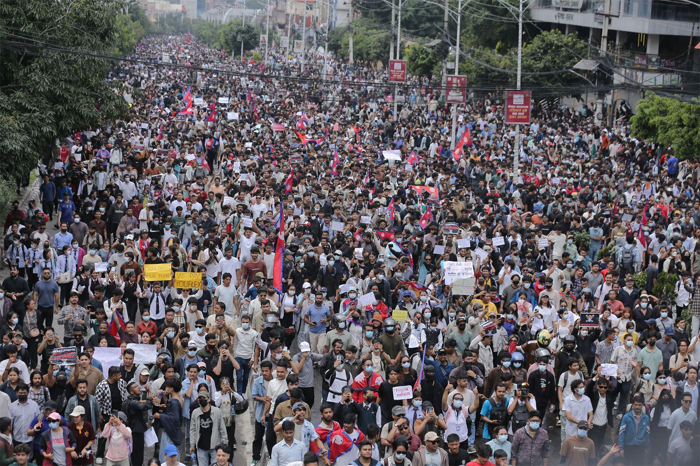
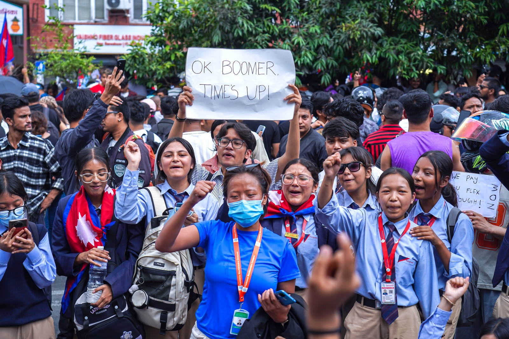
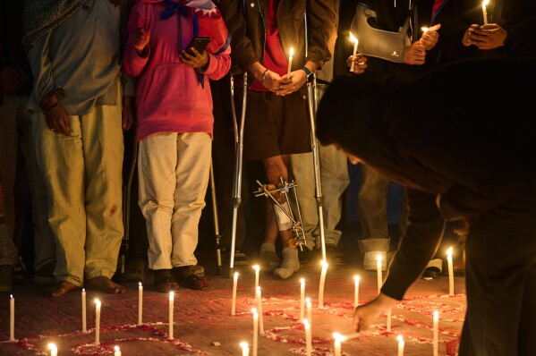
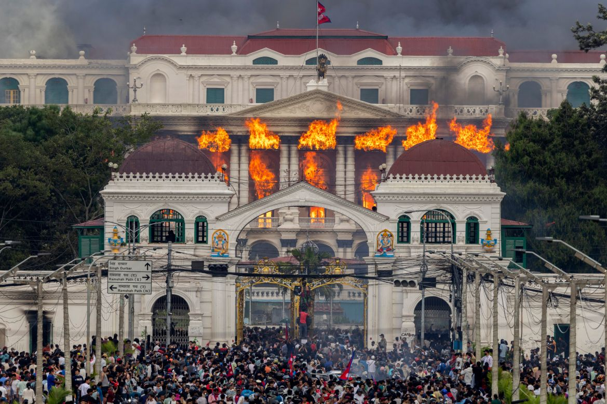
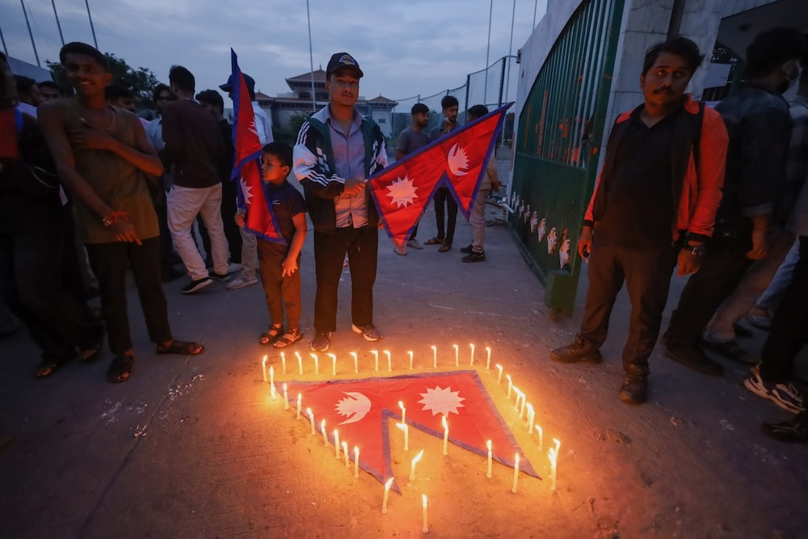
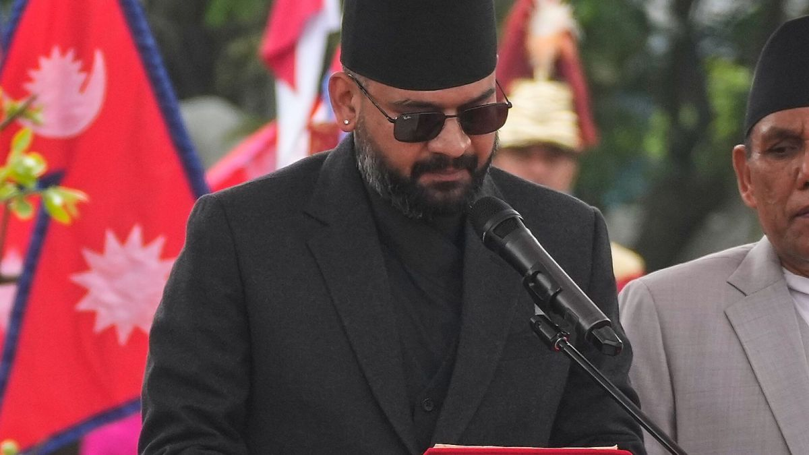

Judicial Inquiry Commission Report
Karki Aayog Report
An interactive summary of the Karki Aayog report on Nepal's September 2025 Gen-Z uprising, so every citizen can quickly understand what happened, who is responsible, and what must change.
What is the Karki Aayog?
On 21 September 2025, the interim government of Nepal formed a three-member judicial inquiry commission chaired by former Supreme Court justice Gauri Bahadur Karki to investigate the deadly violence on 8 and 9 September 2025.
The commission's mandate was to examine the state's use of lethal force against protesters on Day 1, and the widespread arson, vandalism, and looting on Day 2. After multiple deadline extensions, the commission submitted its 900+ page report with 8,000 pages of supplementary evidence to Prime Minister Sushila Karki on 8 March 2026.
The report recommends criminal investigation against former PM KP Sharma Oli, former Home Minister Ramesh Lekhak, and former IGP Chandra Kuber Khapung, along with departmental action against dozens of security officials for their roles in the violence.
Commission Chair
Former Justice Gauri Bahadur Karki (not related to interim PM Sushila Karki)
Commission Members
Bigyanraj Sharma (spokesperson) and Bishweshwar Bhandari
Formed
21 September 2025, submitted 8 March 2026 (extended multiple times)
Implementation
PM Balendra Shah's first cabinet meeting (27 March 2026) decided to implement the report immediately

What Triggered the Protests?
Social Media Ban
On 4 September 2025, the government banned 26 social media platforms including Facebook, YouTube, WhatsApp, and X, citing registration non-compliance. The ban was widely viewed as an attempt to silence the #NepoKids trend exposing politicians' corrupt lifestyles.
Endemic Corruption
Deep frustration over government corruption, nepotism, economic stagnation, and youth unemployment. In a country where the median age is just 25, young people had no faith in the political establishment.
Leaderless Organisation
Coordinated via Discord servers (145,000+ members), VPNs, and QR codes despite the ban. The "Hami Nepal" NGO facilitated coordination. The movement was entirely youth-led with no formal party affiliation.
"This event occurred due to misgovernance. Regulatory bodies have been distorted. Delays in the judiciary and executive, along with partisan appointments even at constitutional levels, have increased public anger."Justice Gauri Bahadur Karki, Commission Chair, upon submitting the report

Timeline of Events
The two deadliest days in Nepal's modern democratic history unfolded in rapid succession. Here is what happened, hour by hour.
Protests Begin at Maitighar Mandala
Thousands of young people, many in school uniforms, gathered at the historic Maitighar Mandala in Kathmandu for a peaceful demonstration against the social media ban and corruption.
Barricades Breached Near Parliament
Crowds grew and demonstrators breached the first police barricades near the Federal Parliament in New Baneshwor. Some climbed parliament walls.
Tear Gas Deployed
Security forces deployed tear gas to disperse protesters near the parliament building.
Protesters Climb Parliament Gate
Around 20 individuals climbed the main gate of the Federal Parliament.
Curfew Imposed in New Baneshwor
The Kathmandu District Administration Office imposed a curfew in New Baneshwor and surrounding areas. Much of the crowd could not hear the announcement.
Police Open Fire For the First Time
Police opened live fire targeting protesters near the Parliament gate. This was the first use of lethal ammunition. Gunshots continued for more than four hours without any attempt to stop the firing, according to the Karki Commission.
Journalist Shot
A Naya Patrika journalist was shot while reporting from near the Parliament compound.
Tear Gas Fired Inside Hospital
Police entered Civil Service Hospital premises and fired tear gas inside the compound where wounded protesters were being treated. 14 fatalities confirmed by this time.
19 Protesters Killed
By early evening, officials reported 19 protesters killed (17 in Kathmandu, 2 in Itahari) and more than 100 injured. Forensic reports confirmed nearly all victims were shot above the waist: head, neck, and chest.
Emergency Cabinet Meeting
PM Oli convened an emergency cabinet meeting. Home Minister Ramesh Lekhak resigned at 8:00 PM. Social media ban lifted at 11:25 PM.

Casualties and Human Cost
The Karki Commission documented 76 deaths over two days. Here is the breakdown of who lost their lives.
Deaths by Category
Breakdown of the 76 fatalities by victim category, as documented in the Nepal Army's official report.
Deaths by Day
Day 1 saw targeted lethal force against unarmed protesters. Day 2 saw retaliatory mob violence and arson-related deaths.
Forensic Finding
Forensic reports from Tribhuvan University Teaching Hospital confirmed that nearly all gunshot victims were struck above the waist, primarily in the head, neck, and chest, violating all crowd control protocols. Post-mortem reports noted that high-velocity 7.62x51mm military-grade bullets caused most deaths. A 12-year-old student was among the confirmed dead.
Use of Force Analysis
Nepal Police records show 13,182 rounds were fired across the country over two days. The Karki Commission found no attempt was made to stop the firing despite it continuing for over four hours.
Ammunition Fired by Type
Breakdown of 13,182 total rounds fired by Nepal Police over 8-9 September 2025.
Firing by Province
The Kathmandu Valley witnessed the highest concentration of force, with 6,891 of the 13,182 total rounds fired.
Including INSAS, SLR rifles, and service pistols. Most lethal force concentrated in Kathmandu Valley (1,329 live rounds).
1,420 of 1,884 rubber rounds were fired in the Kathmandu Valley alone.
Including tear gas fired inside Civil Service Hospital where wounded protesters were being treated.
Warning shots fired, with 1,046 in the Kathmandu Valley.
Destruction and Property Damage
Major Sites Destroyed or Damaged
Government Buildings
- Singha Durbar (Administrative HQ)
- Federal Parliament Building
- Supreme Court (adjacent building)
- Shital Niwas (President's Residence)
- Baluwatar (PM's Residence)
- Ministry of Health
- Road Department
- Commission for Investigation of Abuse of Authority
Political Residences
- KP Sharma Oli (PM) - Balkot residence
- Sher Bahadur Deuba (former PM)
- Pushpa Kamal Dahal (Prachanda)
- Gagan Thapa
- Bidya Devi Bhandari (former President)
- Jhala Nath Khanal
- Ramesh Lekhak
- Numerous other MPs and ministers
Security Infrastructure
- 400+ police stations and offices
- 62 Armed Police Force facilities
- 28 prison facilities (mass breakouts)
- Police personnel property: Rs 220M+ loss
- 500+ weapons still unaccounted for
Private and Media
- Multiple Bhatbhateni Supermarket outlets
- Kantipur media house and server room
- Hilton Hotel, Kathmandu
- Hotels in Pokhara lakeside
- CG Electronics Digital Park
- Chandragiri Cable Car station
Weapons and Ammunition Looted
Status of weapons seized from police stations by protesters, as of November 2025.
Intelligence and Coordination Failures
The Karki Commission strongly criticised systemic intelligence failures and lack of inter-agency coordination.
Discord Monitoring Failure
The National Investigation Department (NID) failed to monitor digital platforms like Discord, where violent plans (including making Molotov cocktails and assaults on officials' residences) were being openly organised. The "Youth Against Corruption" Discord server had over 145,000 members.
No Clear Rules of Engagement
Security forces had inadequate crowd management protocols and unclear Rules of Engagement (ROE), leading to excessive and indiscriminate use of lethal force on Day 1. No attempt was made to stop the firing for over four hours.
Inter-Agency Coordination Collapse
There was a complete lack of coordination between Nepal Police, Armed Police Force (APF), and the Nepali Army. Military support was deployed far too late, arriving only around 4:00 PM on Day 2, after substantial damage had already occurred.
Failure to Secure Armouries
Then-Kathmandu Valley Police Chief Dan Bahadur Karki (now IGP) failed to adequately secure weapons and police offices, resulting in 1,342 firearms and approximately 100,000 rounds of ammunition being looted by protesters.
Who is Held Accountable?
The Karki Commission recommended criminal investigation, prosecution, and departmental action against key political, administrative, and security officials. Here is a breakdown by category.
Accountability by Category
Number of individuals recommended for action by the Karki Commission, by category of recommended action.
10 Key Recommendations
The commission's 10 key recommendations, explained in plain language.
Prosecute Top Leadership
Criminal investigation against former PM Oli, Home Minister Lekhak, and IGP Khapung under Sections 181 (negligence) and 182 (carelessness) of the National Penal Code for allowing gunfire to continue for over four hours.
Action Against Four Senior Officials
Investigation under Section 182 against the Home Secretary, APF IGP, NID Chief, and Kathmandu CDO for their negligence during the crisis.
Departmental Action: Nepal Police
Departmental action against five Nepal Police officers (AIG Shah, DIG Rana, SSP Adhikari, SSP Shamsher, Inspector Kandel) under the Police Act.
Warning to Current IGP
Warning under police regulations to current IGP Dan Bahadur Karki for failing to secure weapons and police offices on Day 2.
Departmental Action: APF
Departmental action against three APF officers under the APF Act for lack of coordination and command failures.
Military Accountability
Action under the Military Act against four Nepali Army commanders who failed to protect key installations (President's residence, PM's residence, Singha Durbar, Parliament).
Investigate TOB Group
Criminal investigation against TOB group members who arrived on motorcycles on September 9 to incite violence and trigger destruction.
Deep Investigation into Day 2
In-depth investigation using CCTV footage, BTS data, and digital evidence to identify individuals involved in arson, looting, and vandalism, including cash found at Deuba's residence.
NID Accountability
Action under the Special Service Act against two NID officials for failing to provide timely intelligence about planned violence being organised on Discord.
Reward Brave Individuals
Rewards for six police officers who risked their lives to protect colleagues and weapons, two civilians who saved police officers from mobs, and a scholarship for Ekta Shah who sat for her MBBS exam despite being injured in gunfire.
"If implemented, this report can transform the country's face. The country may witness another Gen-Z movement if the government fails to implement the report's recommendations."Justice Gauri Bahadur Karki, Commission Chair

The Discord Revolution
With mainstream social media banned, 154,300+ youth organised an entire revolution on Discord — a platform the government didn't think to block. QR codes on printed flyers replaced social media links. VPNs became the new protest tool.
Youth Against Corruption
The main Discord server, operated by Hami Nepal NGO, coordinated protest logistics, safety tips, and non-violent methods across the country.
QR Codes on Flyers
With social media blocked, activists printed physical flyers with QR codes linking directly to Discord servers — a digital-to-analog workaround the government couldn't stop.
VPN Bypass
VPN downloads surged 8,000% in Nepal within days. Even after platforms were technically blocked, citizens maintained communication channels through encrypted tunnels.
The PM Poll
7,586 youth voted in a Discord poll to choose the next PM. Sushila Karki won with 50% (3,833 votes). She was then formally appointed as interim Prime Minister — the first woman to lead Nepal.
Key discussions on Discord ranged from protest logistics and safety tips to constitutional process for transition — but also included concerning elements like Molotov cocktail instructions, which the NID completely failed to monitor.Karki Commission Report — Intelligence Failures Chapter
Victim Stories
Behind every statistic is a person. These are some of those whose lives were changed forever during the September protests.
International Reaction
The world responded with condemnation and calls for accountability. Here is what major international organisations and governments said.
Secretary-General Guterres called for comprehensive investigation, urged restraint, insisted authorities adhere to human rights laws.
Condemned unlawful use of lethal force, called it serious breach of international law, urged authorities to exercise maximum restraint.
Called for independent investigation, found police indiscriminately fired on protesters multiple times over 3 hours, documented shooting of unarmed people in head, chest, and abdomen.
Issued strong recommendation for all American citizens to shelter in place and avoid travel.
Published article on police brutality against children and hospitals.
Global Gen-Z Comparison
Nepal's uprising was not isolated. Across South Asia, youth-led movements have toppled leaders in their 70s, driven by digital organisation and deep systemic frustration.
| Country | Year | Trigger | Deaths | Outcome | Leader's Age |
|---|---|---|---|---|---|
| Nepal | 2025 | Social media ban + corruption | 76 | PM resigned, elections, RSP landslide | 73 |
| Bangladesh | 2024 | Job quota protests | 300+ | PM Hasina fled to India, interim government | 76 |
| Sri Lanka | 2022 | Economic crisis, Aragalaya movement | 9+ | President Rajapaksa fled, new elections | 74 |
| Thailand | 2020 | Democracy and monarchy reform | 2+ | Ongoing reforms, new constitution demands | — |
Common Threads
2026 Election Results
On 5 March 2026, Nepal held general elections. The Rastriya Swatantra Party won a historic near-two-thirds majority, marking the most decisive electoral shift in Nepal's democratic history.
Parliament Seats: 2022 vs 2026
How the political landscape transformed in a single election cycle.
2026 PR Vote Share
Proportional representation vote share in the 2026 general election.
Implementation Tracker
Tracking the implementation status of the Karki Commission's recommendations. Updated as of 29 March 2026.
Declare 8-9 September as martyrs days
Cabinet decision 27 March 2026.
45 individuals declared national martyrs
Cabinet decision 4 November 2025, reaffirmed 27 March 2026.
Criminal investigation against Oli, Lekhak, Khapung
Oli and Lekhak arrested 28 March 2026. Khapung not yet arrested.
Implement Karki Commission report
Cabinet committed to immediate implementation on 27 March 2026. Arrests began 28 March 2026.
Action against 4 senior officials (Section 182)
Home Secretary Duwadi, APF IGP Aryal, NID Chief Thapa, CDO Rijal — no public action reported yet.
Departmental action against 5 Nepal Police officers
No public action reported.
Warning to current IGP Dan Bahadur Karki
No public action reported.
Departmental action against 3 APF officers
No public action reported.
Military Act action against 4 Army commanders
No public action reported.
Investigate TOB group members
No public action reported.
Deep investigation into Day 2 using CCTV/BTS data
No public action reported.
NID accountability (2 officials)
No public action reported.
Reward brave individuals + Ekta Shah scholarship
No public action reported.
The 45 Declared Martyrs
On 27 March 2026, the Balen Shah cabinet declared 45 individuals who died during the Gen-Z protests as national martyrs. Their sacrifice gave Nepal its democratic voice.
In remembrance of those who gave their lives for Nepal's future
Source: Government of Nepal, Cabinet decision 27 March 2026

What Happened Since
From the uprising to democratic renewal: the political transformation that followed the deadliest days in Nepal's modern history.
Interim PM Appointed
Former Chief Justice Sushila Karki was chosen as interim PM via an online Discord poll (3,833 out of 7,713 votes). She became the first woman to lead Nepal.
Karki Commission Formed
Three-member judicial inquiry commission established under former Justice Gauri Bahadur Karki.
45 Declared Martyrs
The government officially declared 45 individuals who died during the September protests as national martyrs.
General Election Held
Rastriya Swatantra Party (RSP) won a near-two-thirds majority (182/275 seats). 915,000 first-time voters. Two-thirds of prior lawmakers did not contest.
Commission Report Submitted
900+ page report with 8,000 pages of supplementary evidence submitted to PM Sushila Karki. Over 200 people were questioned, including former PM Oli.
Report Made Public
The full investigation report entered the public domain, detailing all findings and recommendations.
PM Balendra Shah Sworn In
Balendra (Balen) Shah, the 32-year-old former Mayor of Kathmandu, was sworn in as Prime Minister with a 14-member cabinet. His first cabinet meeting decided to implement the Karki Commission report immediately and declared 8-9 September as martyrs' days.
Oli and Lekhak Arrested
Former Home Minister Ramesh Lekhak arrested at 5 AM from Suryabinayak, Bhaktapur. Former PM KP Sharma Oli arrested later the same morning from his residence in Gundu, Bhaktapur. Due to serious kidney health issues (two transplants), Oli was transferred from Kathmandu District Police Office to Tribhuvan University Teaching Hospital shortly after detention. Both received five-day judicial remand on 29 March. Home Minister Sudan Gurung declared: "No one is above the law."
Former Police Chief Khapung Arrested
Former Inspector General of Police Chandra Kuber Khapung was arrested the same day as Oli. The Karki Commission found he showed "negligent and careless conduct" in failing to stop hours of police firing during the September protests.
Former Energy Minister Deepak Khadka Arrested
Former Energy Minister Deepak Khadka was arrested primarily for money laundering and financial misconduct. Fragments of burnt cash were reportedly found at his residence during the September unrest.
UML Launches Nationwide Protests
CPN-UML, condemning the arrests as "vindictive, biased, and unlawful," launched nationwide protests demanding Oli's immediate release. District committees submitted memorandums to CDO offices across all 77 districts. Demonstrations and clashes with police reported in Kathmandu and Lalitpur. UML supporters burned copies of the Karki Commission report. Police HQ cancelled all leave and ordered officers to return to duty immediately. Oli remains hospitalised at Tribhuvan University Teaching Hospital.
Judicial Remand Granted
Kathmandu District Court granted five-day judicial remand for both Oli and Lekhak, allowing police to record their statements. Oli was transferred to hospital due to serious kidney health issues (he has had two transplants). His legal team argued the arrest was unlawful as he poses no flight risk.
Supreme Court Show-Cause Notice
Nepal Supreme Court issued a show-cause notice to the Balen Shah government, giving it three days to justify the legal basis for Oli arrest after a petition was filed by his wife. The same day, the Supreme Court refused to grant interim relief to Oli and Lekhak. Neither has been formally charged as of early April 2026.
Former CDO Chhabi Rajal Arrested
Former Kathmandu Chief District Officer (CDO) Chhabi Rajal was arrested from his Subidhanagar residence, marking the fourth major arrest and signalling an expanding accountability investigation into the September violence.
September 9 Investigation Committee Formed
The Balen Shah government announced formation of a separate high-level committee to investigate the September 9 incidents (the second day of arson and vandalism), which the Karki Commission had been largely silent on. Congress accused the government of "selective implementation" of the probe report.
UML Accuses Government of State Terror
A UML secretariat meeting formally accused the government of moving toward "state terror," though protests that day saw limited participation with most senior leaders staying off the streets. Initial street protests after Oli arrest resulted in clashes with riot police, injuring over a dozen UML cadres.
Parliament Resumes
Both Houses of Parliament resumed session. CPN-UML (holding only 25 seats in the 275-member House of Representatives) vowed to raise the issue of Oli and Lekhak arrests in parliament, calling them "vindictive and illegal."
No Formal Charges Filed
As of this date, no formal criminal charges have been filed in court against any of the detained individuals (Oli, Lekhak, Khapung, Khadka, Rajal). The cabinet decision to form a study committee before acting on security officials suggests prosecutions against lower-ranking officers may take additional months.
UML Two-Week Protest Programme
CPN-UML announced escalating two-week protest programme: municipal protests (11 Apr), ward-level protests nationwide (16 Apr), provincial capital protests (20 Apr), and grand Kathmandu rally (25 Apr). Maitighar-to-Baneshwor march was blocked by heavy police deployment.
Karki Commission Report: Key Findings
The 1,000-page report, submitted on 8 March and released publicly around 1-2 April 2026, contained these critical findings:
- The report found that "no effort was made to stop or control the firing" and that "even after some people had already died, neither the then prime minister nor other officials took initiative to stop the shooting."
- Statements by Oli and Lekhak claiming ignorance of the violence were described as a bid to "shift responsibility" amounting to criminal negligence.
- Criminal investigation recommended against: KP Sharma Oli, Ramesh Lekhak, former IGP Chandra Kuber Khapung, Armed Police Force chief Raju Aryal, and NID head Hutaraj Thapa.
- Departmental action recommended against AIG Siddha Bikram Shah, DIG Om Bahadur Rana, SSP Bishwo Adhikari, SSP Deep Shamsher, and Inspector Rishiram Kandel.
- A departmental warning recommended for sitting police chief Dan Bahadur Karki for failure to secure weapons and police offices.
- The report acknowledged it "could not establish that there was an order to shoot".
NHRC Separate Report (21 March 2026)
Nepal's National Human Rights Commission separately released its own report implicating Oli and Lekhak, concluding that the morning protests were peaceful until "excessive use of force" caused the situation to spiral.
Victim Compensation
The interim Sushila Karki government announced Rs 1.5 million per family (Rs 1 million financial relief + Rs 500,000 funeral expenses). As of January 2026, 49 of 53 identified deceased families had received payment; four remained in process. Families of prisoners who died while escaping during the protests were not eligible. The Balen government's tribute resolution signals continued political commitment, though no new compensation figure has been announced as of early April 2026.
International Reactions
Human Rights Watch, Amnesty International, and the International Commission of Jurists jointly called (13 February 2026) for the Karki Commission report to be made public and urged all election parties to "end impunity for rights abuses".
- HRW's World Report 2026 documented police use of "excessive and lethal force" during the protests and flagged proposed legislation threatening Nepal's civic space.
- The CIVICUS Monitor flagged continued civic space violations and noted arrests of Gen-Z activists as late as February 2026.
- Major international outlets including BBC, Al Jazeera, Reuters, CNA, DW, and The Guardian carried prominent coverage of Oli's arrest.
RSP Government and Gen-Z Movement Evolution
The RSP won the largest political mandate in modern Nepali history in the 5 March 2026 elections, with Balen Shah defeating Oli himself by 50,000 votes in Oli's own constituency (Jhapa-5). The victory was driven by Gen-Z grievances, though analysts cautioned about bridging Nepal's digital divide (over 40% without internet access).
The Carnegie Endowment noted the new administration faces the real challenge of translating its landslide mandate into tangible governance reforms. Congress has accused the government of "selective implementation" of the probe report, noting the commission's silence on the second day's violence—a tension the new government acknowledged by forming the separate September 9 investigation committee.
The New Cabinet (Sworn in 27 March 2026)
PM Balendra Shah's government includes several faces of the Gen-Z movement, marking a generational shift in Nepali politics.
First Cabinet Meeting Decisions (27 March 2026)
- Immediate implementation of Karki Commission recommendations
- Formation of study committee on security mechanism before departmental action against police officers
- Official tribute to all martyrs of the Gen-Z movement
- Approval of 100-point governance reform agenda
RSP Reform Agenda
The RSP's reform agenda includes delivery-based governance, digitisation of public services, reform of public procurement, depoliticisation of state institutions, creation of 1.2 million jobs, and positioning Nepal as an IT export hub within five years.
Latest Updates
Recent developments since the Karki Commission report was published. Want to add a news update? Edit updates.json on GitHub.
Loading updates…
Frequently Asked Questions
Quick answers for people searching for the Karki Aayog report, the Nepal Gen-Z protest report, and the purpose of this website.
What is the Karki Aayog report?
The Karki Aayog report is the judicial inquiry commission report on Nepal's September 2025 Gen-Z protests. This website summarises the report's key findings, timeline, casualties, accountability recommendations, and political aftermath in plain language.
Why was this website created?
The original report is more than 900 pages long. This site was created so students, researchers, journalists, and ordinary citizens can quickly understand the most important findings without reading the entire document first.
Is this the full official report?
No. This is an interactive public summary of the report and related reporting. It should be used as a guide and overview alongside the full official report and source material.
Can people contribute to this project?
Yes. This is an open public-interest project. People can contribute by suggesting factual corrections, adding better sources, improving the design, strengthening accessibility, or translating and refining the copy. The GitHub repository includes contribution instructions so anyone can open an issue or submit a pull request.
The Social Media Ban
On 4 September 2025, the government banned 26 social media platforms. The ban was lifted on 8 September at 11:25 PM — after 19 people were already dead. VPN downloads surged 8,000% as citizens fought to stay connected.
Banned Platforms
Not Banned